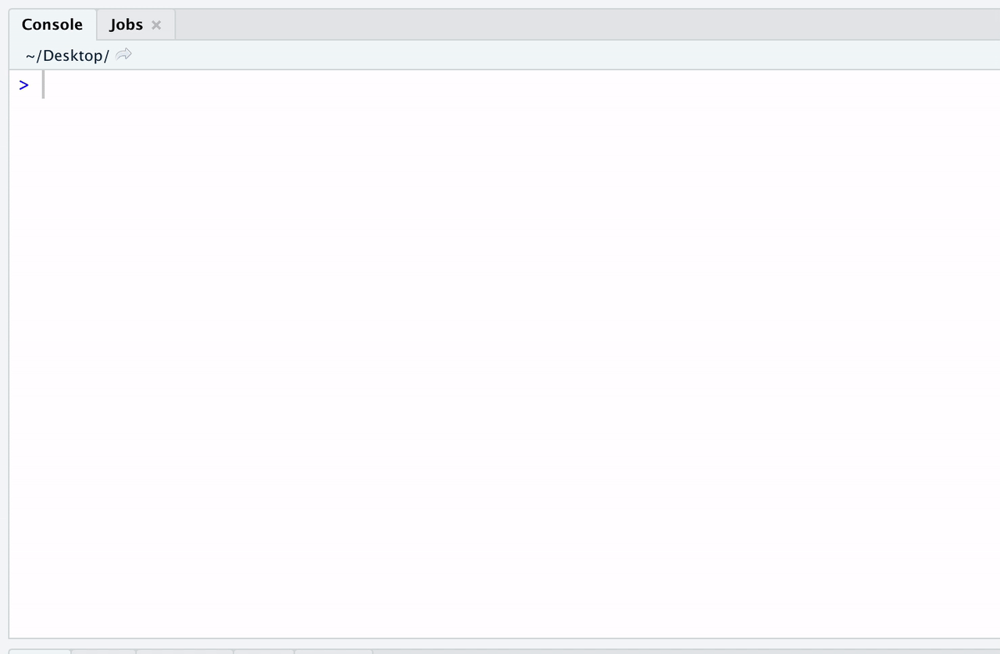

{kind=link}
print(R.version.string)Project 0 (optional)
project 0
projects
Information for Project 0 (entirely optional, but hopefully useful and fun!)
Background
Due date: Sept 8 at 1:29pm
Using the tools we learned in the first week (e.g. R, RStudio and Github). Let’s apply them in a small (but also comprehensive) exercise.
Please note this project is entirely optional (i.e. it will not be graded), but hopefully it will be helpful to you getting set up for the rest of the course (i.e. set up these tools on your computing environment) and give you an opportunity to introduce yourself to your classmates.
For anyone who completes it, you get a free hex sticker! If you aren’t familiar with the hex stickers, check out this link. You can add them to your laptop for some character and swag (or turn them into magnets). I have a ton of different ones from the tidyverse or RLadies Baltimore. You can come pick one up from my office or I can mail it to you if you email me a mailing address after you submit the project.
For those of you who are new to GitHub/R/Rmarkdown: this project makes you do a lot of things that you might not be familiar with. I know that this might be time-consuming and also might feel a bit intimidating. It’s partly unavoidable and partly on purpose. You need to learn how to quickly get up to speed with all kinds of new tools that come your way. So practicing it is a good idea. You are welcome to draw on any sources for help that you want (online, classmates, instructor, etc.). I’m confident with a bit of trial and error you’ll get it to work.
Part 1
This part of the project is to ensure that you have successfully set up your computing environment. Please email (use the Subject line: 140.776 Setup) the Course Instructor (Dr. Stephanie Hicks) at shicks19@jhu.edu the following information:
Setting up your computing environment
Your name, JHED ID (if applicable).
The type of computer/operating system you are using (Windows, Mac, Unix/Linux, other)
The version of R that you have installed on your computer. To do this, start up R and run the following in the R console and include the output in your email.

- The version of RStudio that you have installed on your computer. To do this start up RStudio and in the R console window, run the following and again include the output in your email:
print(RStudio.Version()$version)If you have a GitHub username, please include this in your email. If you do not have a GitHub username, read https://happygitwithr.com, sign up for GitHub, and include your new username in your email to me.
To make sure git is installed on your system, use the ‘Terminal’ (e.g. it’s next to the R Console within RStudio) (or whatever you use), run the following and include the output in your email:
For example, this is mine:
git --versiongit version 2.32.1 (Apple Git-133)If you have any trouble with any of the steps above, try to first post on the discussion board on CoursePlus. The TAs and I will be checking it frequently, but other students may also be helpful in their replies. You can also use other resources to get help (Google, R4DS, colleagues/friends/relatives with R/Markdown experience, etc.). Still, try to do as much as possible yourself. We will use all the bits you are learning here repeatedly during this course.
Part 2
This part of the project is to help you introduce yourself (and your interests!) to others in this course. You will create a new GitHub repository and build a small website about yourself.
1. Create a GitHub repo for your website
Create a new GitHub repository titled biostat776-intro-<firstname>-<lastname> (where you replace <firstname> with your first name and <lastname> with your last name) in your own personal GitHub account (e.g. https://github.com/<yourgithubusername>/biostat776-intro-<firstname>-<lastname>).
For example, you can find an example that I created for myself at
2. Build a website using R Markdown
Using one of the many ways we discussed in class (e.g. a simple R Markdown website, blogdown, distill, etc), create a new project in RStudio with the appropriate files. For example, you might include the following information:
Write a short summary introducing yourself. Structure the webpage with headings, subheadings, etc. Talk a bit about yourself, your background, training, research interests. Let me/us know what kind of statistics, programming, data analysis experience you already have. I am also curious to know what you most hope to learn in this course.
Five fun facts about yourself
A web page linking to something you think is really cool/interesting/inspiring/etc. You could also describe briefly what it is and why you like it.
If you want, feel free to get creative and include other things. You can play with RMarkdown if you wish to, e.g., you can try to include some table or a video, etc.
3. Include a README.md file
Your project repository should include a README.md file (if it was not included already).
Edit the repository README.md file. Typically it will only contain the name of your repository with a # sign in front. The # represents a level 1 heading in Markdown. Change the headline and call it “Introducing myself” (or something like that). Underneath write something like “This website contains a short introduction of Your Name.”
Make sure the 2 files (README.md and especially index.Rmd / index.html) look the way you want. Make changes until everything works.
4. Deploy your website
Depending on how you want to deploy your website, the following may or may not be relevant to you. In general, you want to make sure you have initialized your project to use git (i.e. you can type git init to initialize the repository to use git. Add and commit your changes. Push your changes and deploy your website.
Following steps 2-4, here is my example website: